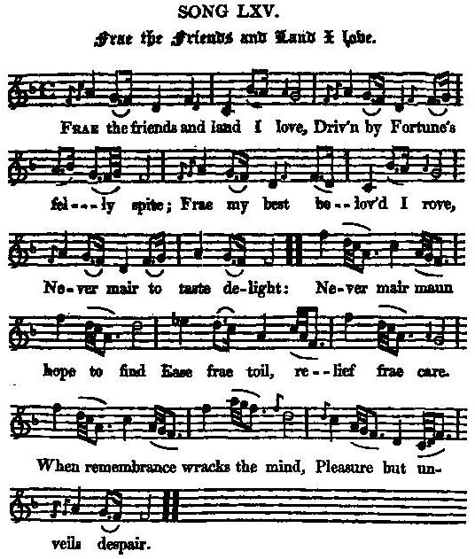

The Friends And Land I Love
Loin de mon pays et des miens
Text (partly) by Robert Burns
(From the "Scots Musical Museum" Vol IV Song 302 Page 312)
and
Hogg's "Jacobite Reliques"
N°65, 1792
Entitled
"The Exile's Lament"
in R. Malcolm's "Jacobite Minstrelsy"
Tune
"Carron Side"
Sequenced by Christian Souchon

|
To the tune
"A song of no great merit" according to Hogg who admits that he copied it from the "Scots Musical Museum". Prior to the 'Museum', the tune of 'Carron Side' appeared in book eight of James Oswald's 'Caledonian Pocket Companion' (c. 1756) and also in his 'Collection of Scots Tunes'. |
A propos du chant
"Un chant sans grand intérêt" selon Hogg qui admet qu'il l'a recopié du "Musée Musical Ecossias". Avant d'être publié dans le "Musée" ce chant l'avait été dans le "Vade-mecum du Calédonien" de James Oswald (env. 1756) ainsi que dans son "Recueil de mélodies écossaises". |

|
1. Frae the friends and land I love, Driv'n by Fortune's felly spite; Frae my best belov'd I rove, Never mair to taste delight: Never mair maun hope to find Ease frae toil, relief frae care; When Remembrance wracks the mind, Pleasures but unveil despair. 2. Brightest climes shall mirk appear, Desert ilka blooming shore, Till the Fates, nae mair severe, Friendship, love, and peace restore, Till Revenge, wi' laurel'd head, Bring our banished hame again; And ilk loyal, bonie lad Cross the seas, and win his ain. |
1. Loin de mon pays et des miens,
Harcelé par la destinée; Je parcours des pays lointains, D'où toute joie semble chassée: Je sens en moi l'espoir mourir D'obtenir jamais délivrance De mes maux, car mes souvenirs, N'engendrent que désespérance. 2. Le plus clair soleil devient ombre, Le pré verdoyant, un désert, Tant que le destin reste sombre, Eloignant ceux qui me sont chers. Puisse, parée de sa couronne, La vengeance ouvrir le chemin Au banni qui franchira l'onde Et viendra recouvrer son bien.
(Trad. Ch.Souchon(c)2004)
|
| (*) For this particular song Burns recorded in his notes on the 'Museum', 'I added the four last lines by way of giving a turn to the theme of the poem, such as it is'. However Stenhouse believed that it was all his | (*) A propos de ce chant Burns indique dans ses notes sur le "Musée musical": "J'ai ajouté les quatre dernières lignes pour donner plus de tournure au poème tel qu'il était". Cependant Stenhouse pensait que tour le poème était de lui. |